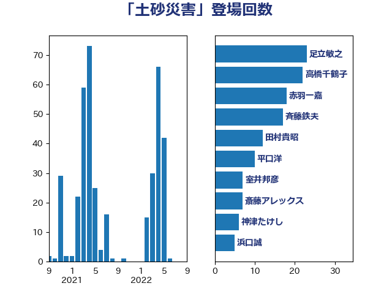

単語「土砂災害」

| 足立敏之 | 自由民主党 | 23 回 |
| 高橋千鶴子 | 日本共産党 | 22 回 |
| 赤羽一嘉 | 公明党 | 18 回 |
| 斉藤鉄夫 | 公明党 | 17 回 |
| 田村貴昭 | 日本共産党 | 12 回 |
| 平口洋 | 自由民主党 | 10 回 |
| 室井邦彦 | 日本維新の会 | 7 回 |
| 斎藤アレックス | 国民民主党 | 7 回 |
| 神津たけし | 立憲民主党 | 6 回 |
| 浜口誠 | 国民民主党 | 5 回 |
| 渡辺猛之 | 自由民主党 | 5 回 |
| 舟山康江 | 国民民主党 | 5 回 |
| 城井崇 | 立憲民主党 | 4 回 |
| 後藤祐一 | 立憲民主党 | 4 回 |
| 渡辺周 | 立憲民主党 | 4 回 |
| 熊谷裕人 | 立憲民主党 | 4 回 |
| 羽田次郎 | 立憲民主党 | 4 回 |
| 長峯誠 | 自由民主党 | 4 回 |
| 住吉寛紀 | 日本維新の会 | 3 回 |
| 塩田博昭 | 公明党 | 3 回 |
| 本田太郎 | 自由民主党 | 3 回 |
| 野田国義 | 立憲民主党 | 3 回 |
| 古川元久 | 国民民主党 | 2 回 |
| 山崎誠 | 立憲民主党 | 2 回 |
| 日下正喜 | 公明党 | 2 回 |
| 杉久武 | 公明党 | 2 回 |
| 福島伸享 | 無所属 | 2 回 |
| 簗和生 | 自由民主党 | 2 回 |
| 菅家一郎 | 自由民主党 | 2 回 |
| 西岡秀子 | 国民民主党 | 2 回 |
| 豊田俊郎 | 自由民主党 | 2 回 |
| 足立康史 | 日本維新の会 | 2 回 |
| 青木愛 | 立憲民主党 | 2 回 |
| たがや亮 | れいわ新選組 | 1 回 |
| 中島克仁 | 立憲民主党 | 1 回 |
| 井上英孝 | 日本維新の会 | 1 回 |
| 伊藤渉 | 公明党 | 1 回 |
| 佐藤啓 | 自由民主党 | 1 回 |
| 塩川鉄也 | 日本共産党 | 1 回 |
| 大口善徳 | 公明党 | 1 回 |
| 大岡敏孝 | 自由民主党 | 1 回 |
| 大野泰正 | 自由民主党 | 1 回 |
| 小宮山泰子 | 立憲民主党 | 1 回 |
| 小野泰輔 | 日本維新の会 | 1 回 |
| 山谷えり子 | 自由民主党 | 1 回 |
| 岡本三成 | 公明党 | 1 回 |
| 岸真紀子 | 立憲民主党 | 1 回 |
| 工藤彰三 | 自由民主党 | 1 回 |
| 市村浩一郎 | 日本維新の会 | 1 回 |
| 平山佐知子 | 無所属 | 1 回 |
| 庄子賢一 | 公明党 | 1 回 |
| 朝日健太郎 | 自由民主党 | 1 回 |
| 木村英子 | れいわ新選組 | 1 回 |
| 村井英樹 | 自由民主党 | 1 回 |
| 枝野幸男 | 立憲民主党 | 1 回 |
| 柴田巧 | 日本維新の会 | 1 回 |
| 浜田聡 | NHK党 | 1 回 |
| 滝沢求 | 自由民主党 | 1 回 |
| 甘利明 | 自由民主党 | 1 回 |
| 田名部匡代 | 立憲民主党 | 1 回 |
| 田島麻衣子 | 立憲民主党 | 1 回 |
| 田村智子 | 日本共産党 | 1 回 |
| 空本誠喜 | 日本維新の会 | 1 回 |
| 紙智子 | 日本共産党 | 1 回 |
| 芳賀道也 | 国民民主党 | 1 回 |
| 萩生田光一 | 自由民主党 | 1 回 |
| 西田実仁 | 公明党 | 1 回 |
| 西田昭二 | 自由民主党 | 1 回 |
| 赤澤亮正 | 自由民主党 | 1 回 |
| 酒井庸行 | 自由民主党 | 1 回 |
| 野田聖子 | 自由民主党 | 1 回 |
| 長浜博行 | 無所属 | 1 回 |
| 阿部知子 | 立憲民主党 | 1 回 |
| 青柳陽一郎 | 立憲民主党 | 1 回 |
| 馬場成志 | 自由民主党 | 1 回 |
| 高橋光男 | 公明党 | 1 回 |
| 高橋英明 | 日本維新の会 | 1 回 |
| 鳩山二郎 | 自由民主党 | 1 回 |